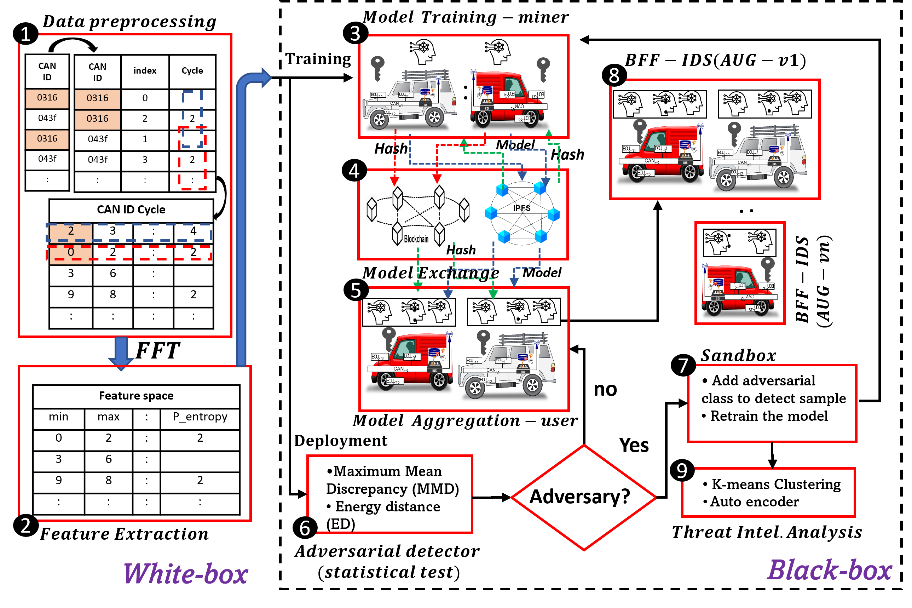
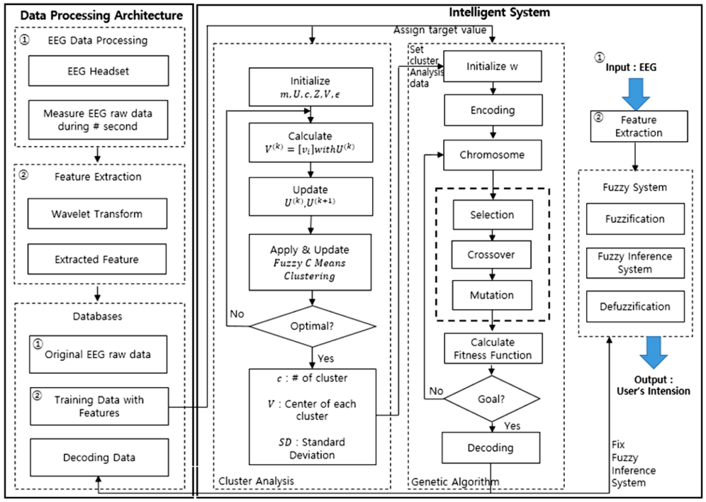
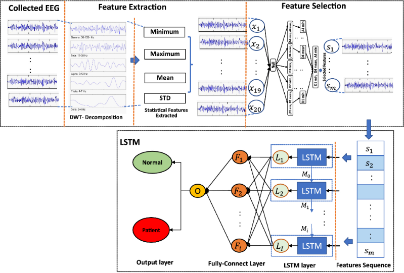

Research Projects
Postdoc Research:
Distributed computing for massive metaverse deployment, digital twin networks, and digital twin for energy systems

The research focuses on distributed computing for massive metaverse deployment, digital twin networks, and digital twin for energy systems. Achievements include:
-
Designed segment routing (SR)-based in-network computing (COIN) architecture for the metaverse
- Developed an SR-enabled COIN for 5G PDU set integrated and differentiated handling
- Joint optimization for task offloading and resource allocation based on SR-enable COIN for Metaverse
-
Distributed computing for the metaverse
- Dynamic partial computation offloading for the metaverse in in-network Computing using game theory and reinforcement learning
- Dynamic redundancy-aware blockchain-based partial computation offloading for the metaverse in in-network computing using game theory and reinforcement learning
- XDN-Based network framework design to communicate interaction in virtual concerts with metaverse platforms
- Digital twin network
- Network traffic prediction model in a data-driven digital twin network architecture
- Digital twins temporal dependencies-based on time series using multivariate long short-term memory
- Nuclear power plant digital twining of human actions and partial computation offloading in in-networking computing-assisted multi-access edge computing using probabilistic graphic model, game theory and reinforcement learning


PhD. Dissertation - Blockchain and Federated Learning Framework for SDN-enabled Intrusion Detection System Architecture in Smart City: A Case Study of In-vehicle Networks

Masters Thesis - Development of Catfish Recognition and Counting Algorithm Using ANN and Size Geometry
AI for the energy system
-
Day-ahead Energy Generation Prediction in Blockchain-based P2P Energy Trading system:
Many governments are reducing conventional energy production using natural gas or coal as they spread much
CO2 to the atmosphere, which leads to global warming. Moreso, with a sharp increase in electricity demand,
renewable energy sources are gaining more popularity around the world.
Renewable energy sources such as solar energy offer one of the easiest ways of generating renewable energy as it can be done by anyone/household through installing solar panels in an open place such as house roofs. Therefore, the decentralized exchange of the generated energy by the household will provide huge economic benefits as well as optimize the flow of renewable energy. However, the current conventional centralized energy trading makes it impossible for individuals (prosumers) to participate because third parties need to enable the transaction, which adds extra financial burden and discomfort.
To eradicate the need for third party through decentralization while ensuring non-tamperability, transparency, security and integrity of transaction, previous works have proposed the integration of blockchain systems into the trading system. However, to ensure the sustainability of blockchain technology for trading, there is a need to consider energy consumption and prediction in the system to enable planning about the energy demand. Thus, this paper aims to design and implement day-ahead power generation prediction in a blockchain-based P2P energy trading system. Hyperledger fabric was employed as the blockchain platform while long short-term memory (LSTM) was proposed for the prediction model in the system. The trading system and the prediction model yield significant performance and prove to be effective for deployment to enhance power management in planning to meet the energy demand.
EEG classification with application to Brain-Computer Interface, Epilepsy and neurodegeneration diseases detection.
The research in this domain includes:
-
Optimal EEG Locations for EEG Feature Extraction with Application to User's Intension using a Robust Neuro-Fuzzy System in BCI Electroencephalogram (EEG) recording provides a new way to support human-machine communication. It allows us to analyze the neuro-dynamics of human cognition. Machine learning is powerful for EEG classification. In addition, machine learning can compensate for high variability of EEG when analyzing data in real-time. However, the optimal EEG electrode location must be prioritized to extract the most relevant features from brain wave data. In this paper, we propose an intelligent system model for the extraction of EEG data by training the optimal electrode location of EEG in a specific problem.
The proposed system is a fuzzy system and structurally uses a neural network. The fuzzy clustering method determines the optimal number of fuzzy rules using the features extracted from the EEG data. The parameters and weight values found in the process of determining the number of rules determined here must be tuned for optimization in the learning process. Genetic algorithms are used to obtain optimized parameters. We present useful results by using optimal rule numbers and non - symmetric membership function using EEG data for four movements with the right arm through various experiments.

- Selection of optimal wavelet features for epileptic EEG signal classification with LSTM:
Epilepsy remains one of the most common chronic neurological disorders; hence, there is a need further to investigate various models for the automatic detection of seizure activity. An effective detection model can be achieved by minimizing the complexity of the model in terms of trainable parameters while maintaining high accuracy. One way to achieve this is to select the minimum possible number of features.
In this paper, we propose a long short-term memory (LSTM) network for the classification of epileptic EEG signals. Discrete wavelet transform (DWT) removes noise and extracts 20 eigenvalue features. The optimal features were then identified using correlation and P value analysis. The proposed method significantly reduces the number of trainable LSTM parameters required to attain high accuracy. Finally, our model outperforms other proposed frameworks, including popular classifiers such as logistic regression (LR), support vector machine (SVM), K-nearest neighbor (K-NN) and decision tree (DT).
-
EEG Dimensional Reduction with Stack AutoEncoder for Emotional Recognition using LSTM/RNN: Due to the important role played by emotion in human interaction, affective computing is dedicated in trying to understand and regulate emotion through human-aware artificial intelligence. By understanding emotions mental diseases such as depression, autism, attention deficit hyperactivity disorder, and game addiction will be better managed as they are all associated with emotion. Various studies for emotion recognition have been conducted to solve these problems.
In applying machine learning for emotion recognition, efforts to reduce the complexity of the algorithm and improve its accuracy are required. In this paper, we investigate emotion Electroencephalogram (EEG) feature reduction and classification using Stack AutoEncoder (SAE) and Long-Short-Term-Memory/Recurrent Neural Networks (LSTM/RNN) classification, respectively. The proposed method reduced the model's complexity and significantly enhanced the classifiers' performance.
Development of Catfish Recognition and Counting Algorithm Using ANN and Size Geometry
The boundary features were extracted using a chain code algorithm and Fourier descriptors (CHFD), which were used to train an artificial neural network (ANN) to perform the recognition. The new counting approach, based on the geometry of the fish, was applied to determine the number of fish and was found to be suitable for counting fish of any size and handling overlap. The accuracies of the segmentation algorithm, boundary pixel and Fourier descriptors (BDFD), and the proposed CH-FD method were 90.34%, 96.6%, and 100% respectively. The proposed counting algorithm demonstrated 100% accuracy.
IoT and Embedded System.
-
Experimental Performance Evaluation and Feasibility Study of 6lowpan Based Internet of Things Demand for low power, small, mobile and flexible computing machines that interconnects is growing rapidly. This study highlights internet of things (IoT) model regarding sensor node discovery and IPV6 framework using 6LoWPAN. Contiki network simulator (cooja) was used to examine the performance of the proposed network.
The simulator was chosen because it provides a good graphical user interface environment and allows rapid simulation setup to be best in simulating a network involving 6LoWPAN. Three experiments were carry out with the network topology designed to have 3, 7 and 5 motes respectively. The parameters considered in the simulation were throughput and packet loss which were examined using packet generation rate of 1 to 50 packet/sec with a constant delay. GET requests was sent to the humidity and temperature sensor motes running CoAP servers, and the corresponding throughput were observed in each case per experiment, it was observed that there was a 10 packet per second increase before it finally dropped. This was because of the packet loss due to the increase in traffic. GET request was sent to motes to obtain the packet loss and the packet that were not acknowledged determined the packet loss.
In this study, the performance of the proposed model in terms of throughput and packet loss was studied and the expected results will aid in planning 6LoWPAN network, A transition flow diagram was evolved for this work to represent packet routing process.
Project Proposals